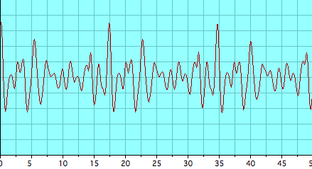
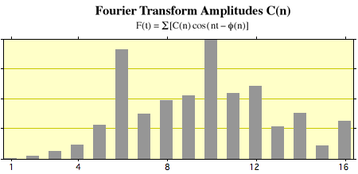

Trombone Pedal Tone Waveform


Trombone tone by Brian Yontz, 2008
This is the waveform and fast fourier transform of a pedal B-flat note at 58Hz. The upper part of the illustration shows the complex waveform of the trombone pedal tone. It is complex because all harmonics of the air column contribute to it. It is the nature of a pedal tone that its frequency is not a true resonance of the air column, but all the harmonics of that frequency do correspond to resonances and help with the vibration of the air column. If the player vibrates his/her lips at the pedal tone frequency, the upper harmonics are excited, providing a strong sound for bass brass instruments like the trombone. Note in the lower part of the illustration that the fundamental is almost totally missing and strong harmonics are shown up to the 16th harmonic.
|
Index
Brass concepts
Brass instruments
Musical instruments |